software engineering
Gergő Pintér, PhD
gergo.pinter@uni-corvinus.hu
goal of this course
- provide a common foundation in software engineering for students from various backgrounds
- provide a shared terminology to be able to work seamlessly with software developers
- introduce the fundamentals of modern software development
methodologies and life cycle models
- with focusing in details on Scrum and Kanban
- introduce requirements analysis and
software modelling
- both in theory and in practice
- provide an insight to code quality, code review, testing and automation
practise
- during the practical classes, the students explore and document the
requirements of a software system
- using user story mapping in accordance with the agile principles
- then, during the second half of the semester, they design its
architecture
- using the C4 model, which is a set of hierarchical diagrams describing the architecture of a software system
- the practical classes are workshops in which the
students work in teams
- under an instructor’s guidance, and can have immediate feedback on the project assignment
schedule
| week | date | lecture | practical class |
|---|---|---|---|
| 1 | 2026-09-16 | intro, software architecture | project assignment |
| 2 | 2026-09-23 | SDLC, scrum, kanban | informal R.A. |
| 3 | 2026-09-30 | requirements analysis, user story mapping | formal R.A., workshop |
| 4 | 2026-10-07 | UML, C4 | project workshop |
| 5 | 2026-10-14 | design patterns | project workshop |
| 6 | 2026-10-21 | interfaces, implementation planning | req. analysis demo |
| 7 | 2026-10-28 | school holiday | |
| 8 | 2026-11-04 | wireframing, clean code | project workshop |
| 9 | 2026-11-11 | code quality, code review | project workshop |
| 10 | 2026-11-18 | testing, legacy code | project workshop |
| 11 | 2026-11-25 | CI, automatization, devops | project workshop |
| 12 | 2026-12-02 | summary | project workshop |
| 13 | 2026-12-09 | midterm | design demo |
schedule
| week | date | lecture | practical class |
|---|---|---|---|
| 1 | 2026-09-16 | intro, software architecture | project assignment |
| 2 | 2026-09-23 | SDLC, scrum, kanban | informal R.A. |
| 3 | 2026-09-30 | requirements analysis, user story mapping | formal R.A., workshop |
| 4 | 2026-10-07 | UML, C4 | project workshop |
| 5 | 2026-10-14 | design patterns | project workshop |
| 6 | 2026-10-21 | interfaces, implementation planning | req. analysis demo |
| 7 | 2026-10-28 | school holiday |
schedule
| week | date | lecture | practical class |
|---|---|---|---|
| 8 | 2026-11-04 | wireframing, clean code | project workshop |
| 9 | 2026-11-11 | code quality, code review | project workshop |
| 10 | 2026-11-18 | testing, legacy code | project workshop |
| 11 | 2026-11-25 | CI, automatization, devops | project workshop |
| 12 | 2026-12-02 | summary | project workshop |
| 13 | 2026-12-09 | midterm | design demo |
evaluation
requirements analysis (35%) + design (35%) + midterm (30%)
e.g., requirements analysis (90×0.35) + design (85×0.35) + midterm (70×0.3) = 82.25 (4)
- requirements analysis and software design
- team work, where each team member gets the same grade expressed as a point (0–100)
- midterm: individual
- Moodle test
- 50 random multiple-choice questions
(1 point each) - scores to grade conversion in the table
- each part should reach passing grade separately
| score | % | grade |
|---|---|---|
| 0-25 | 0-50 | 1 |
| 26-33 | 51-66 | 2 |
| 34-38 | 67-76 | 3 |
| 39-42 | 77-86 | 4 |
| 43-50 | 87-100 | 5 |
activity during lectures may be rewarded up to 5 percentage point
materials
- available online in two formats
- handout
- presentation
- pintergreg.github.io/software-engineering
- also uploaded to Moodle as PDFs
tools
- diagram drawing:
- draw.io
- Google Drawings
- user story
map template for Google Sheets
- probably the least effort
- plantuml
- whiteboard:
- kanban board
- code hosting / task management
- GitHub
- you won’t really need code hosting for this course

program vs. software
A computer program is a sequence or set of instructions in a programming language for a computer to execute. It is one component of software, which also includes documentation and other intangible components.
ISO/IEC 2382:2015 via Wikipedia [1]

program is like a recipe
There is a metaphor saying that a program is like a recipe.
The computer follows the instructions of a program as the cook follows the instruction in a recipe.
Consequently programming is like creating a recipe.
programming vs. software development

- does that mean a program is not
- planned
- documented
- tested
- verified?
- the main difference is the formality of the process
- which correlates the complexity of the project
Process exists to reduce uncertainty, not to create paper trails. – Addy Osmani
Software development is about translating a problem into a solution that a computer can understand and automatically resolve. Preferably in a secure and scalable way.
– Frederick Vanbrabant
software engineering in the age of AI LLM

- if your task was to improve project throughput, your first stop would be software development
- because that takes the most amount of time
software engineering in the age of AI LLM / 2
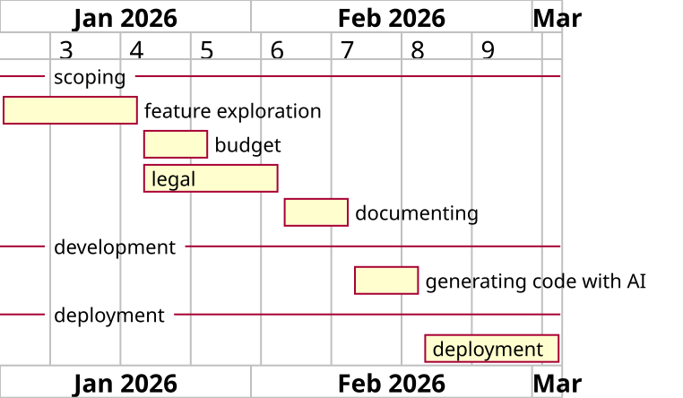
expectation: AI’s going to make it so much faster
Every software developer knows that you can’t make projects go faster just by typing faster. If that were the case we would all be taking typing lessons.
software is made between commits
- coding got cheap^*^ with coding agents
- [^*^price is increasing though]{.text-smaller}
- but coding wasn’t the difficult part
- comprehension and coordination are
- to translate a problem into a solution that a computer can
understand, you need a full overview of the problem
- e.g., with constant iteration with the domain experts
- this is often the part that slows down software development

source/reading: I don’t think AI will make your processes go faster by Frederick Vanbrabant
coding agents generate code based on specification
which can get performing a requirement analysis
What software developers have been begging for since the beginning of the profession: Receiving a detailed outline of the problem and what the end result should look like.
from today, is software engineering dead?
From today, painting is dead.
– Paul Delaroche, French painter
- photography didn’t kill painting,
- just changed what painting was for
- nowadays, having cameras in smartphones doesn’t make everyone a photographer
- although one doesn’t need a photographer to take a photo
- LLMs will change software engineering but won’t replace it
- age of personal software?
- software for one by Adam Waxman
- painting remained as an art, see software craftmanship

reading: From Today, Software Engineering is Dead by Russell Jennings
industrial revolution in software engineering
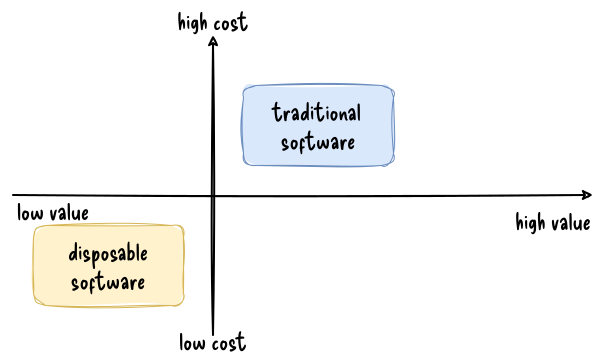
- traditionally, software has been closer to craft than manufacture
- personal or disposable software appears
- perhaps not so scalable or robust but works
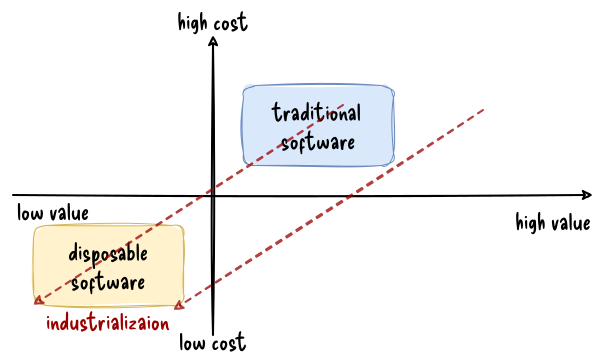
- AI changes this: as with photography, SE got cheaply available for everyone
- brings mass production of code
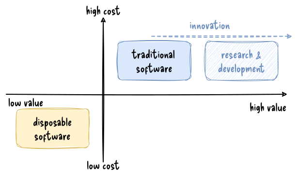
- craftmanship still exists and remains but maybe the direction changes
- focuses on finding and solving new problems
- it’s a cycle though
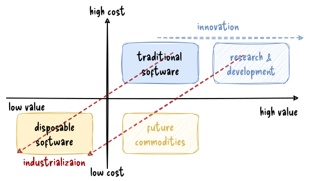
Industrialisation does not replace technological progress, but it will greatly accelerate both the absorption of new ideas and the commoditisation of new capabilities. – Chris Loy
source/reading: The rise of industrial software by Chris Loy [2]
software development is like building a house
- the software development is often compared to house building
- which is more like a sequential process
- after the planning (including building permit, budget, etc.), the
foundation is built first, then walls and the roof
- these phases cannot be swapped
- after the construction is finished, the contractor leaves the site

{kind=link}
maintenance?
software development not is like building a house
a software does not have to obey the laws of physics
- in software development you can start with the door of the second floor bathroom
- the size of a room can be changed during the construction – even several times
software development is like gardening
based on Software Architecture Metaphors by Lisa Stähli [3]
- a garden needs to be taken care of constantly
- without attention the garden will decay
- maintenance is part of software development
- software rots

what is software rot?
Software rot (or software entropy) is the degradation, deterioration, or loss of the use or performance of software over time [4].
dormant rot: the software in question is not changed, but as the environment evolves, it eventually becomes dysfunctional
Muni metro’s control software is still loaded from floppy disks [5]

photo by Albert CC BY-NC 2.0
what is software rot?
active rot
- the software has undergone constant modifications but gradually loses its integrity
- the constant updates / bug fixing can lead to an evolution process,
- which makes the program deviate from its original design,
- even introducing newer bugs
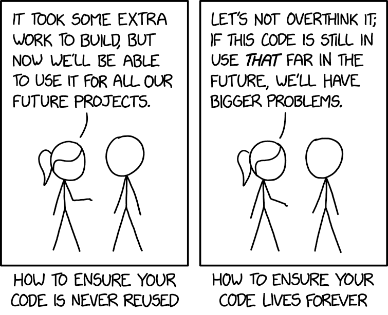
software development is like gardening - cont.
based on Software Architecture Metaphors by Lisa Stähli [3]
- external factors like weather, pests, weeds can influence the garden
- change in user requirements, and the external dependencies such as frameworks, libraries, etc. can affect the software
software development is like gardening - cont.
based on Software Architecture Metaphors by Lisa Stähli [3]
- gardeners has a set of tools, selected for the characteristics of the garden and the gardener
- a beautiful garden is a piece of art
- which can also serve a function, like producing vegetables / fruits
- software developer also uses tools chosen according to the environment and type of software
- software is a piece of art, e.g., the UI has to be not just
functional, but aesthetic and ergonomic
- software code/design is also a piece of art; see software craftmanship (later)
how big are softwares?
software is often measured by the source lines of code
A line of code (LOC) is any line of text in a code that is not a comment or blank line.
how big are softwares?
software is often measured by the source lines of code
| app | version | LOC (million) |
|---|---|---|
| Vanilla Music Player for Android | 1.3.2 | 0.048 |
| VLC for Android | 3.6.5 | 0.265 |
| Telegram for Android (messaging app) | 11.14.1 | 6.6 |
| GCC (compiler) | 15.1 | 15 |
| Firefox (web browser) | 142 | 45 |
| Windows [6] | 10 | 50 |
| Linux (kernel) | 6.16 | 40 |
further read about size of software by Christopher McFadden
software growth
number of lines of code is increasing
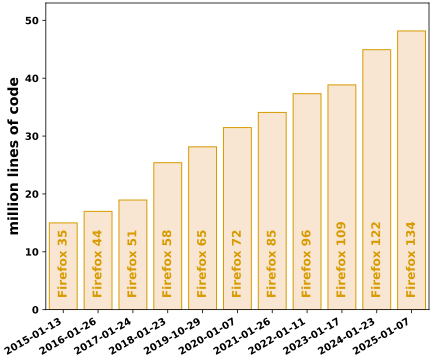
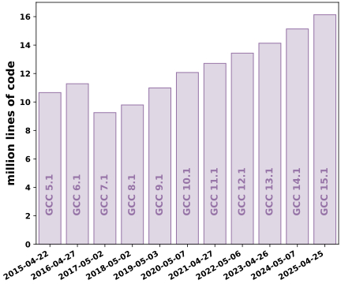
infographic about codebase growth
why does software grow?
because we want
more and more functionality
software growth – aircrafts
24 million lines of code – operational and support – needed for the F-35 to be fully operational; when the program started, the estimated number of lines of code required was closer to 15 million
– Robert N. Charette, F-35 Program Continues to Struggle with Software [7]
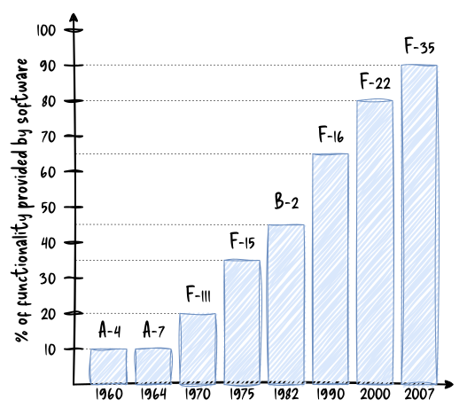
software growth – car industry
- 1981, GM was using microprocessor-based engine controls executing about 50 000 lines of code [9]
- even low-end cars now [2009] have 30 to 50 electronic
control units (ECUs)
- that means these cars “execute” tens of millions of lines of software code that control everything from your brakes to your radio volume [9]
- in a modern car [2023], you can expect to find 50 to over 100 ECUs [10]
- for hybrids, the amount of software required for engine control is almost double that of a standard car [9]
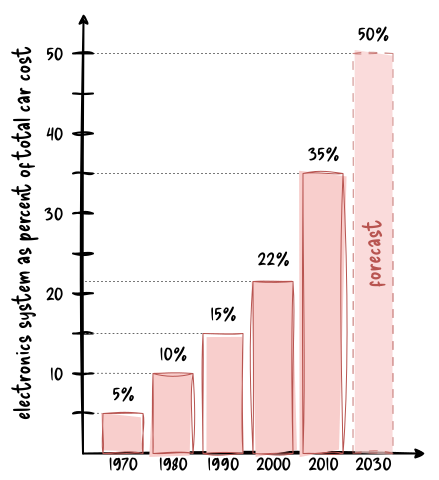
measuring code lines?
source: www.folklore.org by Andy Hertzfeld | CC-BY-NC
- in 1982, some managers of the Lisa team decided to track each
developer’s weekly code output
- developers had to report every Friday the number of LOC they wrote that week
- Bill Atkinson was working on optimizing Quickdraw’s region
calculation at that time, and he had completely rewritten the region
engine using a simpler, more general algorithm, which got almost
six times faster
- as a by-product, the rewrite saved about 2000 LOC
- that week’s output, in terms of lines, was -2000
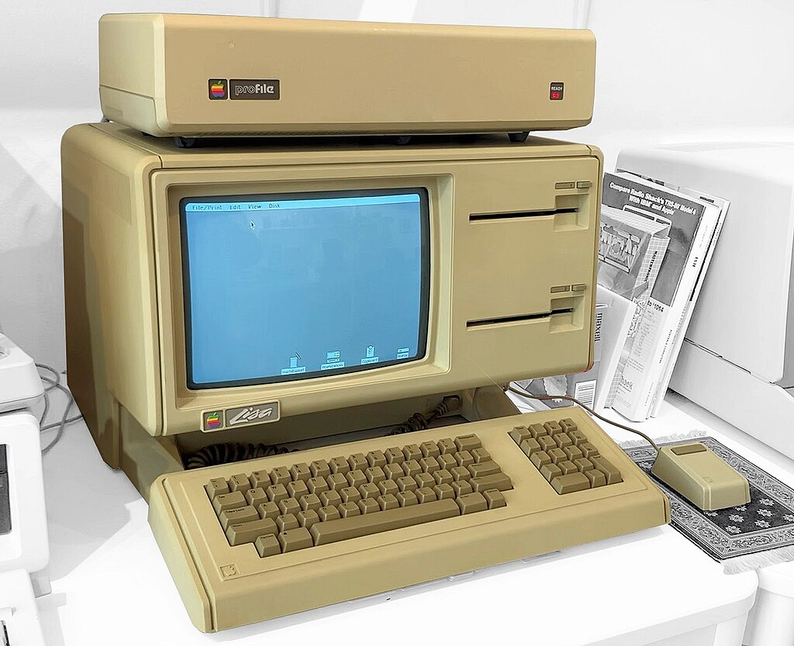
{kind=link}
CC-BY-SA
Quickdraw: 2D graphics library
the more, the better?
if we wish to count lines of code, we should not regard them as “lines produced” but as “lines spent”
E. W. Dijkstra EWD 1036
Every line of code written comes at a price: maintenance. To avoid paying for a lot of code, we build reusable software. The problem with code re-use is that it gets in the way of changing your mind later on.
keep it simple
We don’t add stuff “just because we can”. We need to have a damn good reason for it.
A designer knows he has achieved perfection not when there is nothing left to add, but when there is nothing left to take away.
– Antoine de Saint-Exupéry (29 June 1900 – 31 July 1944)
- KISS, an acronym for “Keep it simple, stupid!”
- a variations: keep it stupidly simple
- the acronym got popular in the 70s
- see Occam’s razor
Zawinski’s law of software envelopment
Every program attempts to expand until it can read mail. Those programs which cannot so expand are replaced by ones which can.
– Jamie Zawinski
- programs experience pressure to evolve into toolkits and application platforms
- often interpreted as a comment on software bloat
second-system effect
The second-system effect (also second-system syndrome) is the tendency for a successful first system (often small and relatively elegant) to be followed by a second system that becomes over-engineered or bloated.
– Fed Brooks, The Mythical Man-Month (1975) [13]
migitation:
- resisting unnecessary generalization,
- making resource costs visible for small features,
- ensuring experienced architectural leadership
more in [Laws of Software Engineering / Second-System Effect] by Dr. Milan Milanović
users only care about 20% of your application
- 80% of the users will only ever use about 20% of your application’s features
- but not enough to implement only 20%
- because each user uses a different 20%

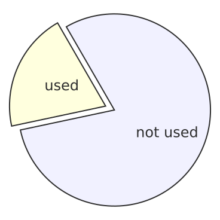
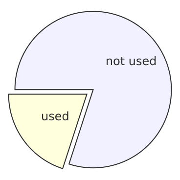

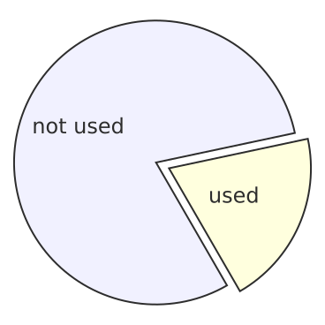
further reading: Simplicity
by Joel Spolsky,
Users
Only Care About 20% of Your Application by Ibrahim Diallo
Linux 5.8 – 800,000 new lines of code
Linux Torvalds: despite not really having any single thing that stands out… 5.8 looks to be one of our biggest releases of all time
- how is it manageable?
- process
- version control
- each change must do only one thing
- proper documentation
- changes cannot break the software
- rigorous and automated testing
a more technical read: Why Linux’s biggest ever kernel release is really no big deal
version control
- version control (a.k.a. revision control) is system for recording and managing changes made in files
- commonly used to manage source code
- however, it can be used to tracking changes to any kind of files
- people often employ their own version control system, without realising it
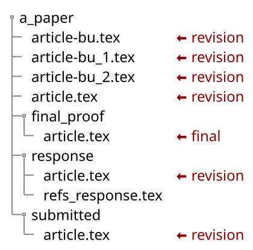
based on Simon Mutch’s Version Control materials
why you should use version control (for everything)
In practice, everything that has been created manually should be put in version control, including programs, original field observations, and the source files for papers.
– Best Practices for Scientific Computing; Wilson et al. 2012 (arXiv:1210.0530)
this presentation is under version control as well
benefits of version control systems
- generate backups
- separates experiments from the working version
- branching, deployment strategies (much later in the course)
- keep history and track changes
- traceability
- foster collaboration and contribution
- team work
The current level of software complexity is not manageable without allowing many people to work on the same code base, and the separation of the development versions from the production one.
later on the course: the types and operation of version control systems
complexity
- more functions mean more lines of code
- more lines of code increases the complexity
- and the cost of maintenance


if you want to deliver product fast, and the developer time is expensive, reuse components
is it possible to decrease the dependency stack?
is it possible to decrease the dependency stack?
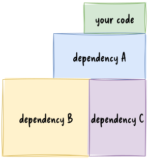
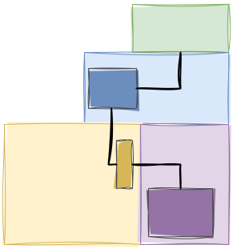
choose your dependencies wisely
which is actually an architecture decision
dependencies for transposing a spreadsheet
| 1 | 2 | 3 | 4 | 5 | 6 |
| 7 | 8 | 9 | 10 | 11 | 12 |
| 13 | 14 | 15 | 16 | 17 | 18 |
| 19 | 20 | 21 | 22 | 23 | 24 |
| 25 | 26 | 27 | 28 | 29 | 30 |
| 31 | 32 | 33 | 34 | 35 | 36 |
| 37 | 38 | 39 | 40 | 41 | 42 |
| 1 | 7 | 13 | 19 | 25 | 31 | 37 |
| 2 | 8 | 14 | 20 | 26 | 32 | 38 |
| 3 | 9 | 15 | 21 | 27 | 33 | 39 |
| 4 | 10 | 16 | 22 | 28 | 34 | 40 |
| 5 | 11 | 17 | 23 | 29 | 35 | 41 |
| 6 | 12 | 18 | 24 | 30 | 36 | 42 |
import pandas as pd
def transpose_with_pandas(path: str) -> pd.DataFrame:
df = pd.read_excel(path)
return df.transpose()8 dependencies: numpy, pandas, python-dateutil, pytz, six, tzdata, et-xmlfile, openpyxl
dependencies for transposing a spreadsheet / 2
import numpy as np
from openpyxl import load_workbook
def transpose_without_pandas(path: str) -> np.ndarray:
wb = load_workbook(filename=path, read_only=True)
arr = np.array(
[[cell for cell in row] for row in wb.active.iter_rows(values_only=True)]
)
return np.transpose(arr)3 dependencies: numpy, et-xmlfile, openpyxl
dependencies for transposing a spreadsheet / 3
from openpyxl import load_workbook
def transpose_without_numpy(path: str) -> list:
wb = load_workbook(filename=path, read_only=True)
sheet = wb["Sheet1"]
mx = []
for row in sheet.iter_rows(values_only=True):
mx.append(list(row))
# https://stackoverflow.com/a/6473724/4737417
return list(map(list, zip(*mx)))2 dependencies: et-xmlfile, openpyxl
dependencies are used only to open an XLSX spreadsheet, the transposition is achieved only using the standard library
not trivial to understand the
list(map(list, zip(*mx))),
read the explanation at Stack
Overflow
why don’t you reimplement it (from scratch)?
trade-off between
- implementation speed (or ease of coding) and the number of dependencies
- reading/understanding the code and the number of dependencies
advice: you don’t want to reimplement datetime / timezone handling
how much code a developer write
Mythical man month: 10 lines per developer day [14]
Redis is composed of 100k lines of code, I wrote at least 70k of that in 10 years. […] assuming I work 22 days every month for 11 months:
70000/(221110) = ~29 LOC / day
Which is not too far from 10 […], so the Mythical Man Month book is indeed quite accurate.
– Salvatore “antirez” Sanfilippo, creator of the Redis in-memory database
| years of coding | avg. lines per day | lines per year |
|---|---|---|
| 1-5 | 100 | 25,000 |
| 5-10 | 80 | 20,000 |
| 10-15 | 60 | 15,000 |
| 15-20 | 40 | 10,000 |
| 20+ | 20 | 5,000 |
reimplementation costs
estimation by the Linux Foundation [16]
- Linux kernel (2008) 6.8 million LOC
- COnstructive COst MOdel (COCOMO) for cost estimation
- using 2008 US salaries: $1.4 billion
- development effort estimation exceeds 7500 Person-Years
Linux 6.16 (released 2025-08-07) has about 40 million LOC
| years of coding | avg. lines per day | lines per year |
|---|---|---|
| 1-5 | 100 | 25,000 |
| 5-10 | 80 | 20,000 |
| 10-15 | 60 | 15,000 |
| 15-20 | 40 | 10,000 |
| 20+ | 20 | 5,000 |
recalculating reimplementation costs
- with Opus 4.5 and enabling Agent Teams, the average net lines added by Claude per commit is 1,000 lines of code per commit
- which is ~2 magnitudes higher than what a human programmer writes per day
source: The Cathedral, the Bazaar, and the Winchester Mystery House by Drew Breunig
implementation costs are changing
practically decreasing
complexity classes
There are known knowns; there are things we know we know. We also know there are known unknowns; that is to say we know there are some things we do not know. But there are also unknown unknowns – there are things we do not know we don’t know.
– Donald Rumsfeld (13th & 21st United States Secretary of Defense)
| complexity class | known | unknown | knowns | unknowns |
|---|---|---|---|---|
| simple | ✓ | x | ✓ | x |
| complicated | ✓ | x | ✓ | ✓ |
| complex | x | ✓ | ✓ | x |
| chaotic | x | ✓ | x | ✓ |
source: [17]
complexity classes
from Michael Bykovski’s essay [17]
- in a simple system, we know the knowns, everything is predictable, it’s easy to understand the system
- in a complicated system, we know the knowns and unknowns
- it requires analysis to know the unknowns, but the system is measurable
- it is the province of engineers, surgeons, intelligence analysts, lawyers, and other experts [18]
- in a complex system, the knowns are unknown to us, but we are aware of our uncertainty
- a chaotic system is a system of unknown unknowns
project complexity – Cynefin framework
- Cynefin framework is a conceptual framework used to aid
decision-making
- cynefin (/kəˈnɛvɪn/ kuh-NEV-in) is a Welsh word for ‘habitat’
- created by Dave Snowden
- defines five decision-making contexts or “domains”
- clear (aka simple)
- complicated
- complex
- chaotic
- confusion (or disorder)
- you can read more on Wikipedia

by Thomas B. Cox | CC-BY-SA
{kind=link}
project complexity
Stacey matrix [19]
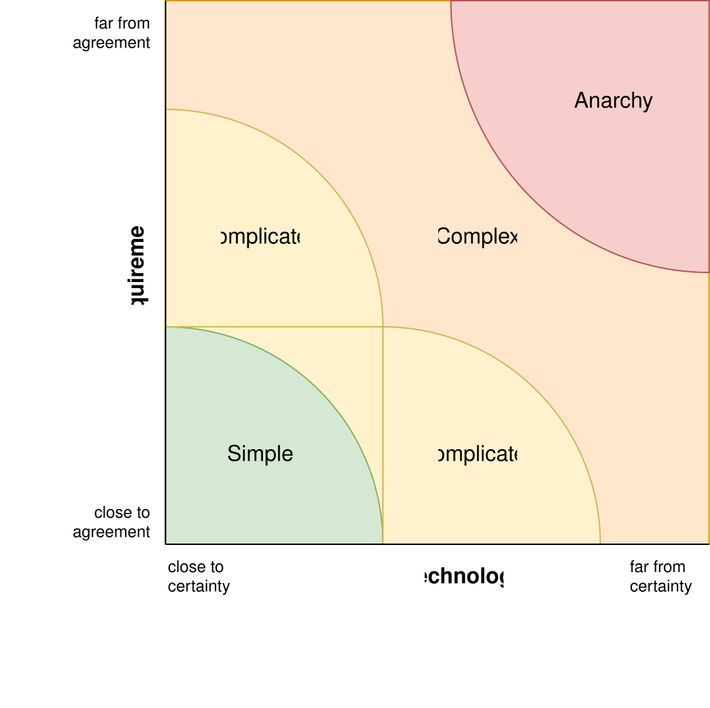
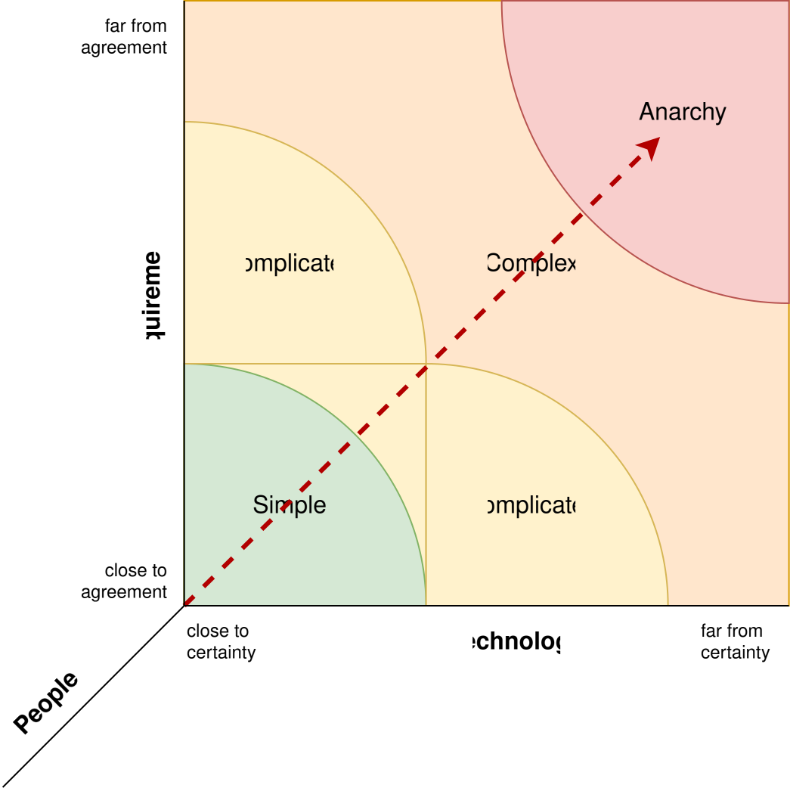
discussion
Should a software developer add complexity to the software code to make the interaction simpler for the user
or should the user deal with a complex interface so that the software code can be simple?
source: Larry Tesler [20]
Tesler’s law
a.k.a law of conservation of complexity
Every application has an inherent amount of complexity that cannot be removed or hidden. Instead, it must be dealt with, either in product development or in user interaction. [20]
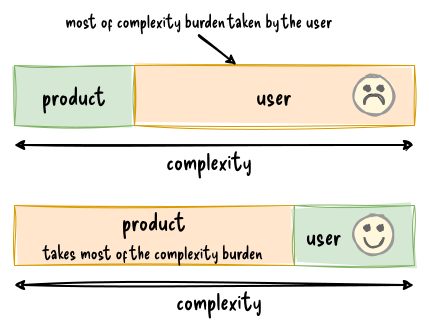
more on Laws of Software Engineering / Tesler’s Law by Dr. Milan Milanović
what is software architecture?
“Architecture” is a term that lots of people try to define, with little agreement. There are two common elements: One is the highest-level breakdown of a system into its parts; the other, decisions that are hard to change.
– Martin Fowler - Patterns of Enterprise Application Architecture
In most successful software projects, the expert developers working on that project have a shared understanding of the system design. This shared understanding is called ‘architecture’. This understanding includes how the system is divided into components and how the components interact through interfaces. These components are usually composed of smaller components, but the architecture only includes the components and interfaces that are understood by all the developers.
Ralph Johnson, XP mailing list
All architecture is design but not all design is architecture. Architecture represents the significant design decisions that shape a system, where significant is measured by cost of change.
– Grady Booch
so, architecture
- represents design decisions
- shared understanding
- the architecture decisions
have to be recorded
architechture decision record
# Title
## Status
What is the status, such as proposed, accepted,
rejected, deprecated, superseded, etc.?
## Context
What is the issue that we're seeing that is
motivating this decision or change?
## Decision
What is the change that we're proposing and/or doing?
## Consequences
What becomes easier or more difficult to do
because of this change?ADR template by Michael Nygard from Documenting architecture decisions
what are these decisions?
topologies, for example
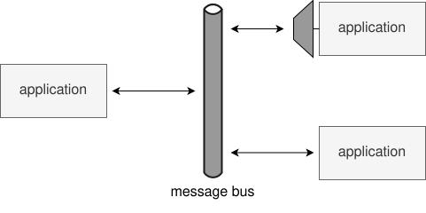


based on: Introduction to Software Architecture
Architecture is the decisions that you wish you could get right early in a project.
– Ralph Johnson
to do that, you need to know all the unknowns, so you need requirements analysis, and learning the new/unknown technology
design is compromise
Compromise is neither good nor bad, it’s something we do every day. It’s decision making. Prioritizing. Deciding that one thing is more important than another. It’s finding the right balance between two competing desires.
Which compromises you make — that’s what matters. Choosing the right compromises is what defines good design.
constructing a software design
There are two ways of constructing a software design:
One way is to make it so simple that there are obviously no deficiencies and the other way is to make it so complicated that there are no obvious deficiencies.
The first method is far more difficult.
– C.A.R. Hoare [22]
see KISS philosophy…
summary: software engineering often compared to house building
- because it is an engineering discipline
- however software doesn’t have to obey
the laws of physics - software design should focus on the data structures and the
connection between the modules
- not the implementation details
software development is more like gardening
- a garden might be planned
- external factors influence the result
- weather, pests
- garden needs constant care to bloom
- sometimes also experimentation
- methods, tools
- garden is like an art (with function)
software growth
- number of lines of code is increasing
- which increases complexity
- “every line of code written comes at a price: maintenance” [23]
- larger garden, more gardening
- software development processes to handle the complexity
- the course focuses on requirement analysis and design